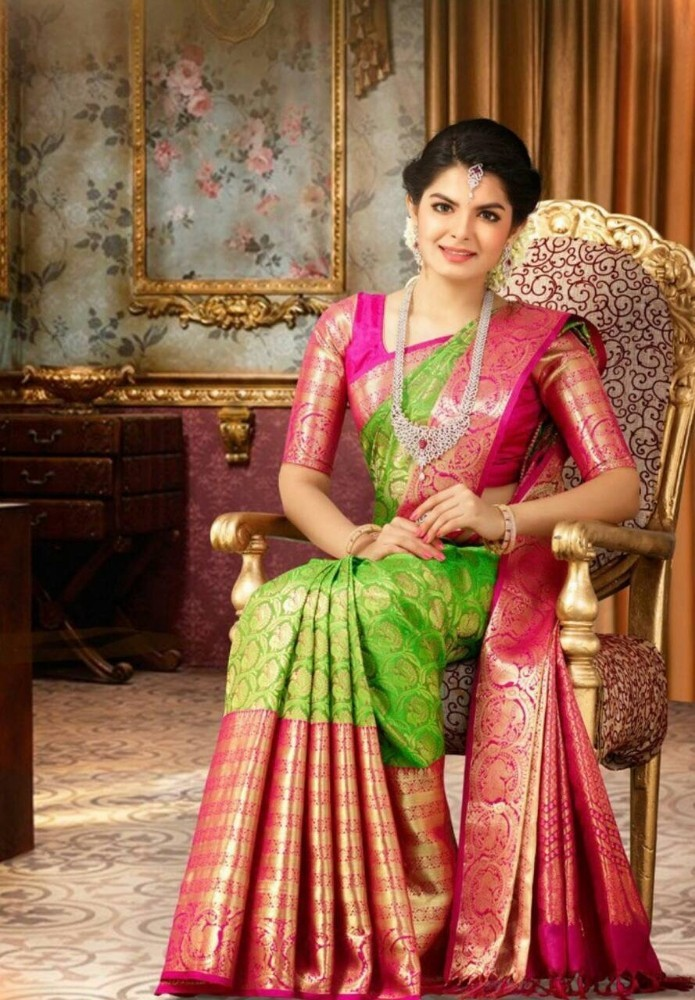
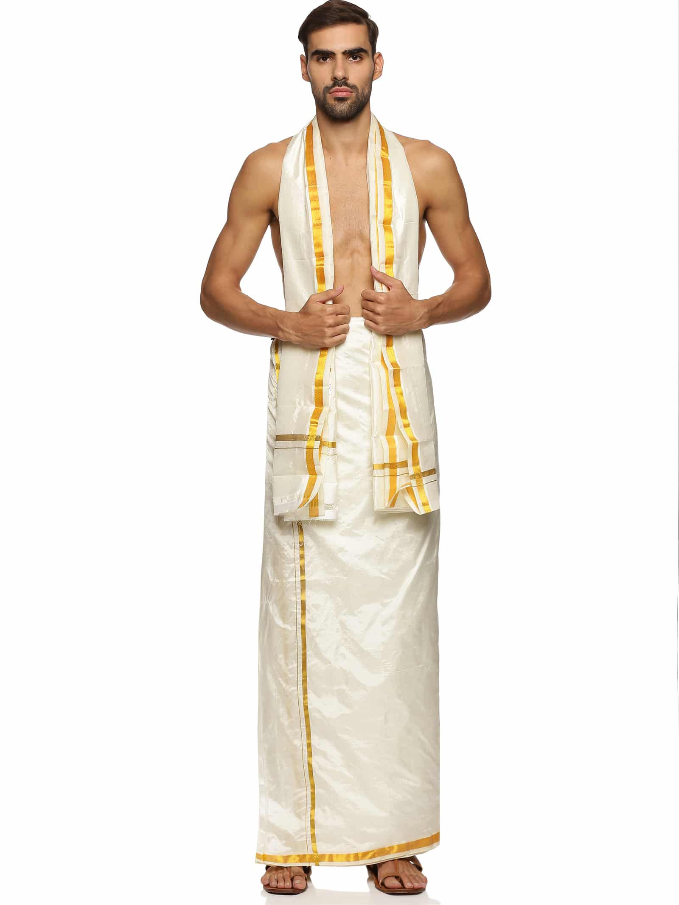

Traditional Attire
The traditional clothes of Tamil Nadu showcase the region's rich cultural heritage and vibrant history. Here are some of the most iconic garments.

Kanjeevaram Sari:
The Kanjeevaram sari is renowned for its luxurious silk and intricate zari work, often worn during weddings and festive occasions.
